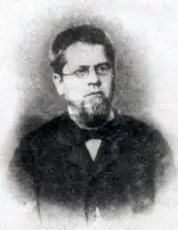
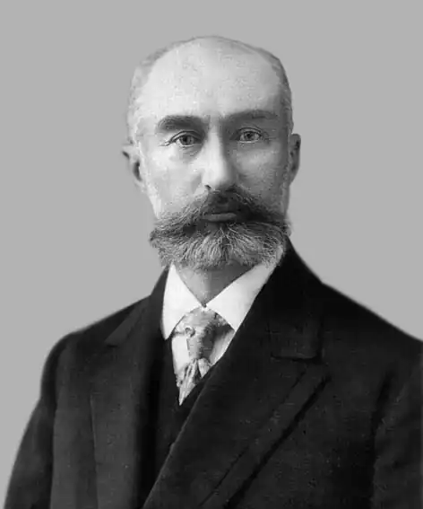

АДРІАН КАЩЕНKО
(1858 — 1921)
Кащенко Адріан Феофанович — один з найпопулярніших українських письменників на початку XX ст. Автор численних прозових творів про вікопомну героїку Запорозької Січі. Його перу належать оповідання — "Запорожська слава", "На руїнах Січі", "Мандрівка на пороги", у повістях "З Дніпра на Дунай", "Зруйноване гніздо" він показав трагічну долю козацтва після знищення Запорозької Січі. Створив галерею портретів національних героїв України у творах: "Над Кодацьким порогом" (Про гетьмана Івана Сулиму); "Гетьман Сагайдачний", "Кость Гордієнко-Головко — останній лицар Запорожжя". Адріан Кащенко (1858 — 1921) Адріан Феофанович Кащенко народився 19 вересня 1858 року в родині Феофана Гавриловича Кащенка, родовід якого сягає часів Запорозької Січі в пору її розквіту. Батько був небагатим поміщиком, власником хутора Веселого, який входив до складу Лукашівської волості Олександрівського повіту Катеринославської губернії. Сім'я Кащенків була великою — п'ятеро хлопців і чотири дівчини. Всі діти здобули грунтовну освіту та добре виховання. Двом із них — найменшому Адріанові та старшому від нього на три роки Миколі — судилося відіграти помітну роль в історії культури свого народу. В багатодітних сім'ях діти рано стають самостійними, часто старші виховують молодших. Так було і в Кащенків. Спокійний і мрійливий Адріан мав собі за наставника енергійного та заповзятливого Миколу. В дорослому житті їхні інтереси розійшлися. Микола Кащенко став знаменитим ученим з двома докторськими дипломами, дійсним членом АН УРСР. Він був засновником і директором Київського ботанічного саду. Адріан обрав собі невдячну долю українського літератора. Провчившись всього три роки в гімназії, А. Кащенко вступив до юнкерського училища. Але, на відміну од найстаршого брата, який дослужився до генерала, Адріан не зробив військової кар'єри. Прослуживши кілька років офіцером, він, як свідчить брат Микола, вступив на дрібну службу в управління залізниці (був контролером у поїздах). Оселившись у Катеринославі, одружився, купив маленький будиночок на вулиці Польовій, з невеликої платні допомагав навіть старим батькам, а коли в 1888 році померла мати, він узяв на своє утримання батька і доглядав його до смерті. Свої ж глибокі душевні запити задовольняв посильною працею на ниві українського письменства. Одного разу Кащенко хотів поселитися в Києві, ближче до українського національно-культурного життя, до брата, та з цього нічого не вийшло. Він продав власну хату, щоб купити собі оселю на одній із київських круч. Гроші поклав у банк, який збанкрутував на другий же день, і всі його заощадження пропали. Довелось далі тягнути лямку контролера. Начальство його перекидало з місця на місце: спочатку — в Перм, згодом — у Петербург, де він став помічником головного контролера залізниці, далі в Туапсе — головним контролером залізниці, що будувалася, і, нарешті, знову до Катеринослава. Приїхавши в 1913 році до Києва, він прицінювався до однієї хатини, що височіла на Лук'янівському горбі, під яким стоїть Кирилівська церква, та з'ясувалось, що вона не по кишені. Не пощастило А. Кащенку і в сімейному житті. Дружина, свавільна, сварлива особа, часто кидала його і врешті покинула остаточно, але з умовою, що він утримуватиме її довіку. Востаннє А. Кащенко приїхав до Києва восени 1917 року. Після перенесеного інсульту письменник хотів одержати сяку-таку пенсію від нової влади, біля керма якої стояли його кумири М. Грушевський та В. Винниченко. Пенсії він не одержав, бо молода республіка потребувала таких сумлінних працівників, як А. Кащенко. Повернувшись до Катеринослава, працював далі з поновленим завзяттям. Протягом 1917 — 1919 років Кащенко опублікував найбільше своїх творів. Так сталось не тому, що тоді він їх найбільше написав. У попередні роки А. Кащенко теж писав, не покладаючи рук. Тільки не все з написаного потрапляло до друку. Ряд творів навіть після революції 1905 — 1907 років не могли бути видрукувані з цензурних міркувань. І лише в 1917 — 1918 роках, коли в Катеринославі з'явилось Українське видавництво, яке невдовзі стало видавництвом Кащенка, він зміг надрукувати свої давніші та щойно написані твори. А. Кащенко не щадив себе в роботі, і хвороба знову звалила його. Останні півтора року він був прикутий до ліжка. Помер А. Кащенко 16 березня 1921 року. Літературний доробок письменника не такий уже малий, як на його життєві умови, ще не зібраний і зовсім не вивчений. На Радянській Україні знайомство з А. Кащенком тривало до 1933 року, на Західній — років на дванадцять довше. В роки культу і застою на його книги було накладено категоричне табу. Після майже шести десятиліть мовчання А. Кащенко знов заговорив до нових своїх читачів, починаючи від наймолодших і кінчаючи тими, які щось пам'ятають про нього ще з літ своєї юності.